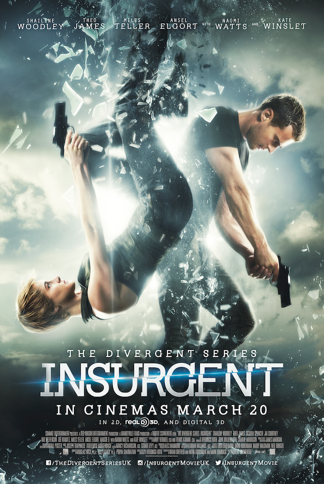

Het is een Amerikaanse actie-sciencefictionfilm uit 2015. Robert Schwentke heeft de film geregisseerd. De film is voortgekomen uit een gelijknamig roman dat al eerder was geschreven. Insurgent is de tweede film in de Divergent Series. De eerste film was Divergent en de derde Allegiant.
Tris en Four zijn samen op de vlucht voor Jeanine Matthews. Zij wilt namelijk alle Divergents oppakken om haar te helpen met het openmaken van een doos die door de stichters van het futuristische Chicago is gemaakt. Alleen Divergents zouden deze door open kunnen maken. Jeanine wilt heel graag weten wat de stichters te zeggen hebben, want zij wilt graag de baas zijn over Chicago. Dit loopt allemaal anders dan gepland. Tris en Four weten haar te stoppen. Ze maken de doos wel open en laten de boodschap aan de buitenwereld zien. De Divergents waren juist de mensen die de stad moesten gaan besturen. Ze waren niet slecht zoals Jeanine dacht.